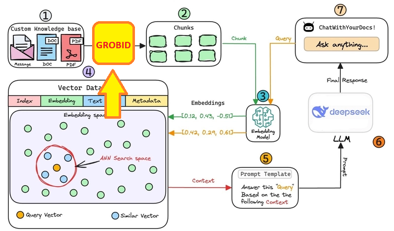
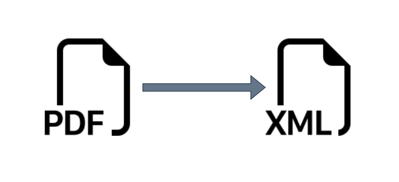

GROBID
Introducción / Problemática
n8n dispone de un nodo llamado Extract from File que permite múltiples opciones, entre ellas, "extract from PDF". Inicialmente, el flujo del sistema consistía en descargar cada paper y luego procesarlo con este nodo. Si bien este método es relativamente rápido para extraer texto plano desde un PDF, el output no es preciso ni estructurado.
Esto genera una gran desventaja cuando se busca trabajar los datos de forma organizada por cada paper, especialmente al intentar identificar secciones específicas como introducción, metodología, resultados, etc. Por lo tanto, se vuelve confuso y poco confiable para alimentar una base de datos vectorial, que luego será utilizada en el sistema RAG para responder preguntas basadas en el contenido de los papers.
Ante esta necesidad, se exploraron soluciones más robustas y específicas para la lectura y estructuración de artículos científicos en PDF. De esta búsqueda surge GROBID, una herramienta open-source, dockerizada y ampliamente adoptada en contextos académicos y científicos, que permite una extracción estructurada y enriquecida de los documentos.

Figura 1: "Ilustración de dónde entraría GROBID en nuestro esquema"
¿Qué es GROBID?
GROBID (GeneRation Of BIbliographic Data) es una herramienta de código abierto basada en machine learning que permite extraer y estructurar información desde documentos científicos a PDF. Está entrenado específicamente en el dominio académico, por lo que reconoce con alta precisión elementos como:
- Títulos
- Autores
- Afiliaciones
- Secciones del paper
- Citas bibliográficas
- Referencias cruzadas
- Figuras y ecuaciones
Su modelo se basa en técnicas de procesamiento de lenguaje natural (NLP) y CRF (Conditional Random Fields) para el etiquetado de textos, lo cual lo convierte en una alternativa ideal para estructurar artículos científicos de forma automática.
Nuestro uso
En nuestro proyecto, utilizamos GROBID para transformar documentos PDF en archivos XML. Esto permite luego procesar los papers por secciones específicas, enriquecer los resúmenes automáticos y alimentar la base de datos vectorial para responder preguntas con mayor precisión.

Figura 2: "Conversión de PDF a XML estructurado mediante GROBID"
Que es XML?
XML (eXtensible Markup Language) es un lenguaje de marcado diseñado para almacenar y transportar datos de forma estructurada, legible tanto para humanos como para máquinas.
Características clave:
- Etiquetas personalizables:
<dato>contenido</dato>. - Autodescriptivo: La estructura define el significado de los datos.
Ejemplo:
<libro>
<titulo>El principito</titulo>
<autor>Antoine de Saint-Exupéry</autor>
</libro>